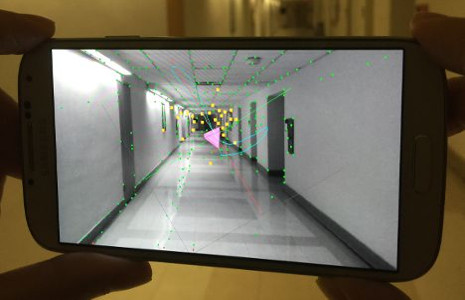
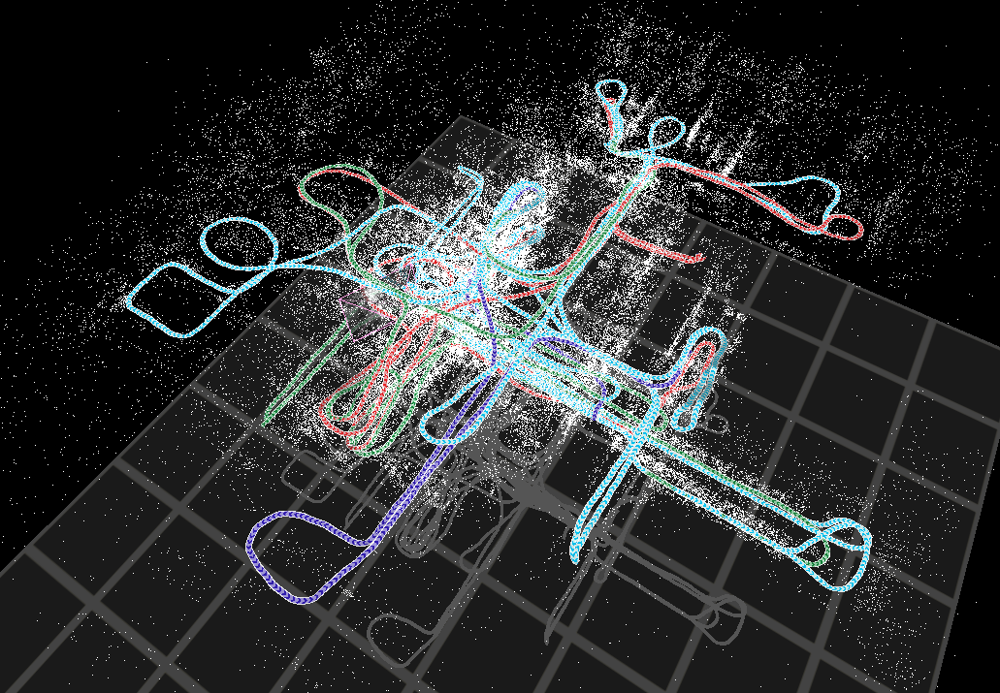
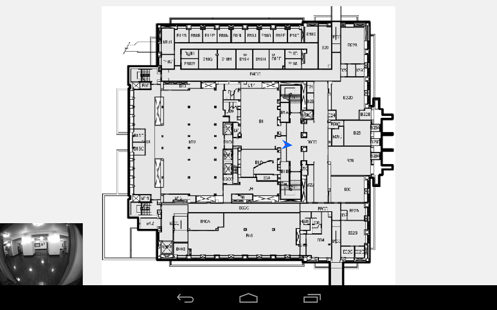

Ryan
DuToit
DuToit
I am a Ph.D. student at the University of Minnesota, Department of Computer Science and Engineering;
I work as a research assistant in the MARS robotics lab.
Projects
I have spent time designing, implementing, and testing real-time, 6DoF pose-estimation algorithms on a mobile device. Our group has contributed state-of-the-art vision-aided inertial navigation systems (VINS) on mobile platforms, such as Samsung S4, Google Glass, and Project Tango prototype.

VINS running on a Samsung S4
I have contributed to a cooperative mapping (CM) algorithm, which fuses data collected from several users and/or robots, and generates a 3D map of point and line features.

A 3D point-cloud of a building, image taken from online map visualization
One of my primary interests is leveraging a pre-built map (from CM) to enhance real-time pose estimation. Map-based localization enhances the performance of standard VINS, and allows the user to see their pose on a blueprint of the previously mapped building using only visual and inertial data.

User pose (blue arrow) on a blueprint, current image is in bottom left.